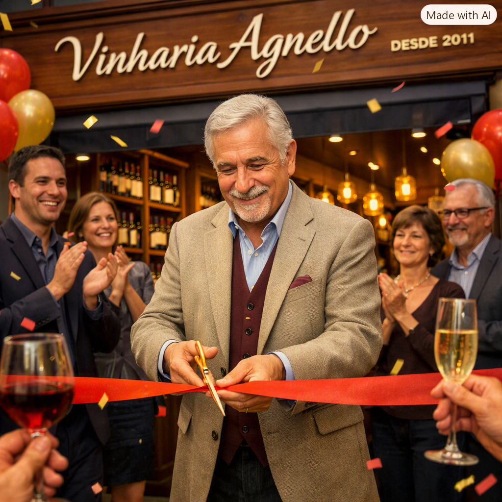

Origens
Fundada pelo Sr. Giulio em 2011, a Vinharia Agnello abriu suas portas na capital paulista, com o objetivo de dar experiência única. Para isso, Sr. Giulio investiu no treinamento extensivo de seus funcionários, a fim de orientar melhor os clientes em suas buscas pelo vinho ideal.

Pandemia
Após o início da pandemia, a Vinharia Agnello sofreu uma grande queda nas vendas, correndo o risco de falir. Somente após a ajuda de Bianca, filha do Sr. Giulio, os negócios começaram a prosperar.
Dias atuais
Nestes últimos seis anos, o sucesso acompanhou o nome da Vinharia Agnello. A instalação de um sistema ERP por Bianca possibilitou o grande renome que vemos hoje. Vendendo vinhos em sua loja física e agora também virtualmente, a Vinharia Agnello segue firme, unindo tradição e inovação.
Resumo em linha do tempo
| Ano | Descrição |
|---|---|
| 2011 | A Vinharia Agnello é fundada por Sr. Giulio |
| 2020 | A pandemia prejudica o estabelecimento até a intervenção de Bianca |
| 2026 | Modernização da loja, foco na digitalização de serviços. |
Equipe
Conheça um pouco da equipe
- Giulio Almeida da Silva - Fundador
- Bianca Almeida Rocha - Diretora de Operações
- Mariana Torres - Gerente de Marketing
- Rafael Coutinho - Diretor Financeiro
- Fernanda Lopes - Coordenadora de Vendas Online
- Sofia Martins - Assistente de loja
- Carlos Menezes - Estoquista
- André Figueira - Caixista